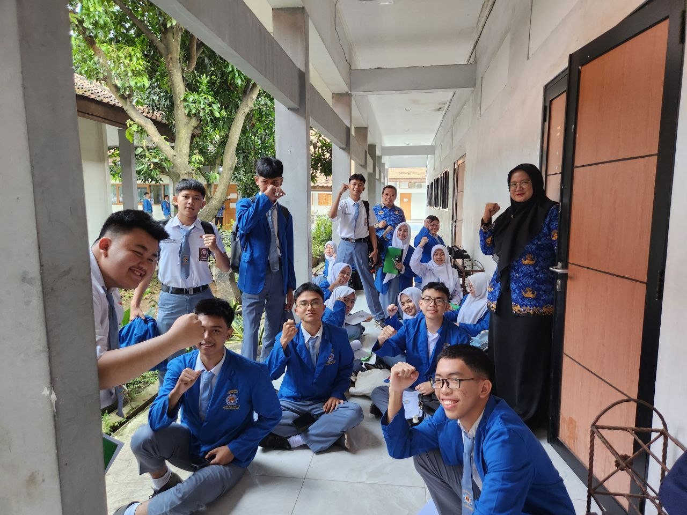

|
Website CarissaMy Dear, Shuri Von Neuschwanstein
|
|
| Beranda | Tentang Saya | Sekolahku | Syair Lagu | |
SMK Negeri 1 Tangerang Ucapkan Selamat kepada Lulusan Kelas XII4 May 2026  Tangerang – SMK Negeri 1 Tangerang menyampaikan ucapan selamat dan apresiasi kepada seluruh murid kelas XII yang telah berhasil menyelesaikan masa pendidikan. Pencapaian ini merupakan hasil dari kerja keras, kedisiplinan, dan dedikasi murid selama menempuh proses pembelajaran. |
Tautan eksternal |
| © Copyright Carissa Evelyn Al-Khanza, 2026. | |